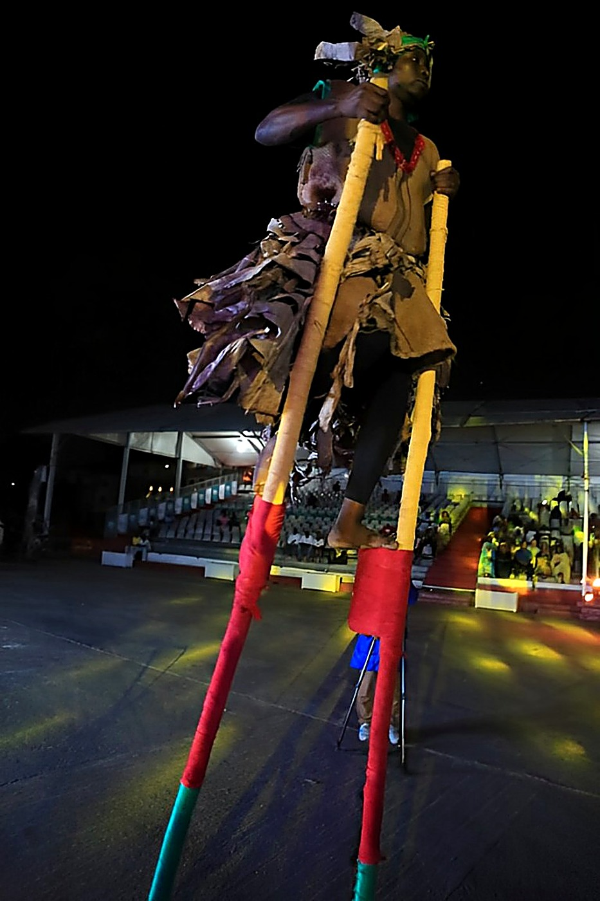

Origins of the Canton
The history of Bèlè Bèlè Canton is intimately linked to that of Njo Njo Canton: both territories were born from the separation of two brothers, sons of the same father, Doo Makongo, patriarch of the Duala clan settled on the Joss plateau (present-day Bonanjo). Among his children were Njo (Priso), the eldest, and Bèlè, his favoured younger son. Worn down by his elder brother's repeated mistreatment, Bèlè crossed the Wouri River with part of his family and servants to settle on the right bank, at the home of his father-in-law Dissomè, whose eldest daughter he had married.
This territory, then occupied by Bassa and Bakoko communities (today the villages of Bonamatoumbè and Sodiko), was named Hickory Town by the colonists, then later Bonabéri — a French deformation of "Bona Bèlè". Though far away, Bèlè remained dear to his father's heart, who asked him to succeed him; Bèlè instead sent his own son, Bébé a Bèlè, to reign in his place over Njo Njo — thus becoming the first "King Bell" of the modern era. Meanwhile, Bèlè built a vast and solid clan on the right bank, which today extends to the edge of the Moungo department. While Njo Njo and Bèlè Bèlè are now two administratively distinct cantons, they remain linked by a shared genealogy — and it is from this canton that the "KIEL'A NGONDO" vision, the Ngondo of tomorrow, focused on youth, is carried forward.
🔱 KIEL'A NGONDO Vision
The Superior Chief
The Ngondo in Pictures

